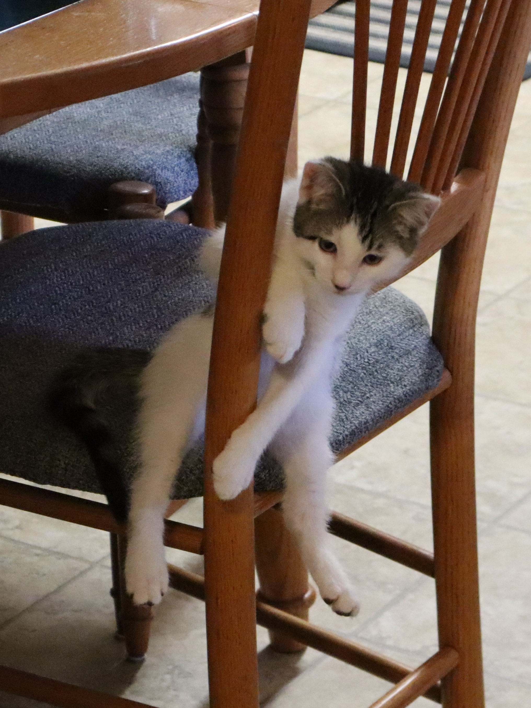
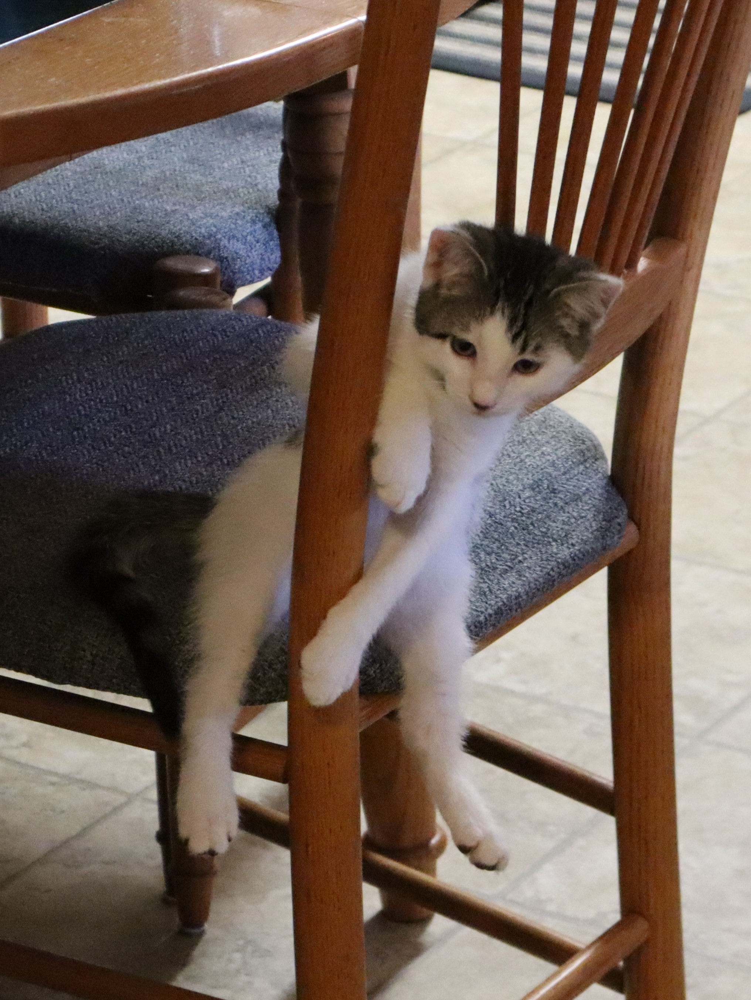

About Me:
I started coding in college when on a whim I decided to take computer science with my friend Trevor. Since then I have been in love with the software development process and all things tech. I strive to learn more and adapt to the ever changing world of technology. In my free time I play games and sometimes post videos on youtube. I also ski in the winter and love to watch baseball in the summer.
I have two cats. A tuxedo named Mittens,
 and a white and black tabby named Oliver.

and a white and black tabby named Oliver.

I also love all things coffee and I am currently attempting to learn how
to make latte art. Here is an example of one of my first attempts 😂.

I am planning to use this website as an archive or portfolio / blog for things that interst me. Please feel free to poke around and see what projects I am currently working on.